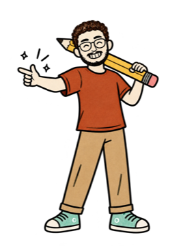
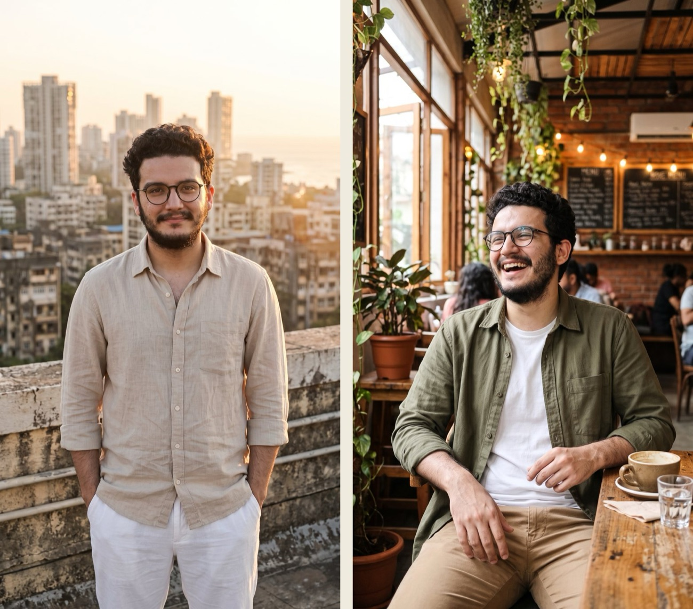
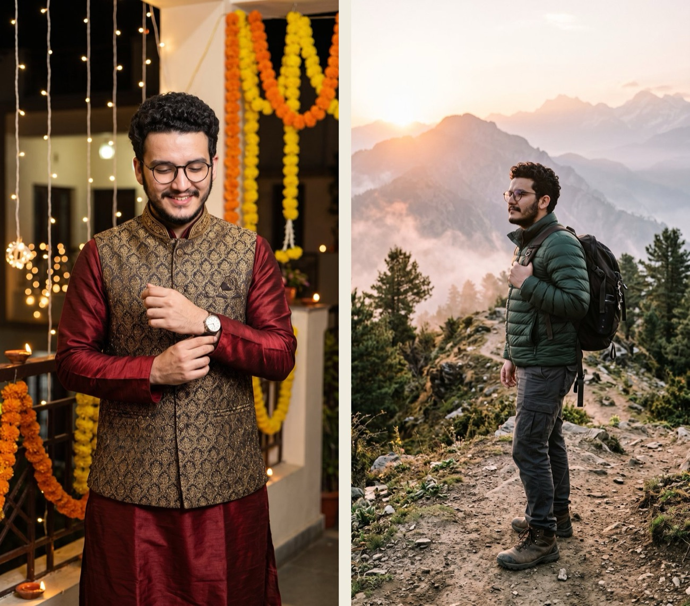

@theabhaychopra
@theabhaychopraWhat you need
- A Google account — Flow is for ages 18+ and works in India.
- Google Flow — a website, nothing to install: labs.google/flow. A laptop is easiest.
- One clear photo of you — the rules are just below.
- Credits — my 10 photos used none of mine. Everyone also gets 50 free Flow credits a day.
You upload one photo, then ask Flow's Agent for one look at a time — a place, an outfit and a pose — with your photo attached every time. Ten prompts, ten looks.
Pick the right photo

The #1 complaint on this trend is "my face changed". Most of the time, the photo is why.
A filtered selfie gives Flow a face that isn't quite yours, a side angle hides half of it, and a tiny low-res photo leaves it guessing. Start sharp and straight-on, and the face-lock line does the rest.
Upload your photo
Open labs.google/flow → New project → drop your photo into the project.
Set images to 9:16
In the Agent chat, open the settings (the sliders icon) → Image generation default → 9:16 → Save. Every look now comes out vertical.
Attach your photo to every prompt
Before each prompt: + → pick your photo → Add to prompt. One look per message — when I asked for all 10 at once, Flow failed half of them and the faces drifted.
The face-lock line
Every prompt ends with this line. It's why all 10 looks still look like me.
Use my uploaded photo as the only reference for this man: keep his exact face, hairstyle, beard, round glasses, skin tone and body shape. Do not beautify, slim or change him. Photorealistic vertical 9:16 photo, natural skin texture, 35mm lens. No text.
Mumbai rooftop · Bangalore café

Look 1 of 10, one image only. Golden hour on a Mumbai rooftop with the city skyline behind him. He wears a beige linen shirt with rolled sleeves and white trousers. Pose: standing straight and relaxed, hands in pockets, soft smile at the camera, three-quarter length.
Look 2 of 10, one image only. Inside a cosy Bangalore cafe with warm lights, plants and a wooden table. He wears an olive overshirt over a white t-shirt and tan chinos. Pose: sitting at the table with a coffee cup, laughing, head tilted back a little.
Studio portrait · Neon street
Look 3 of 10, one image only. A clean photo studio with a deep blue backdrop and a soft key light. He wears a tailored navy suit with a crisp white shirt, no tie. Pose: arms crossed, confident smile, looking straight at the camera, waist-up.
Look 4 of 10, one image only. A busy city street at night with neon shop signs and soft bokeh lights. He wears a black leather jacket over a grey t-shirt and black jeans. Pose: walking towards the camera mid-stride, full body.
Goa beach · Coworking space
Look 5 of 10, one image only. A Goa beach at sunset with a warm orange sky and gentle waves. He wears a white cotton kurta with rolled sleeves and light beige trousers, barefoot on the sand. Pose: looking back over his shoulder at the camera with a half smile, full body.
Look 6 of 10, one image only. A bright modern coworking space with big windows and a laptop on the desk. He wears a light blue oxford shirt with the sleeves rolled up and grey trousers. Pose: sitting at the desk, hand on his chin, thinking, looking slightly off camera, waist-up.
Diwali night · Himalayan trail

Look 7 of 10, one image only. A festive Diwali evening with warm fairy lights and marigold garlands behind him. He wears a maroon silk kurta with a gold-embroidered Nehru jacket. Pose: adjusting his watch and smiling, three-quarter length.
Look 8 of 10, one image only. A Himalayan mountain trail at sunrise with pine trees and misty peaks. He wears a dark green puffer jacket, cargo trousers and hiking boots, a backpack on one shoulder. Pose: side profile, looking into the distance, full body.
Old bookshop · Basketball court
Look 9 of 10, one image only. An old bookshop with tall wooden shelves full of books and warm lamp light. He wears a cream cable-knit sweater and dark brown trousers. Pose: leaning against a bookshelf with one foot up, holding an open book, smiling, full body.
Look 10 of 10, one image only. An outdoor basketball court in the evening with city lights behind the fence. He wears a black athletic t-shirt, grey joggers and white sneakers. Pose: sitting on a bench, leaning forward with elbows on his knees, smiling at the camera, full body.
My Flow credit counter stayed at 1,050 the whole time.
From Flow's credits page and my own account. Google changes these — check your own counter.
Before you post

Now shoot yours
One clear photo is all it takes.